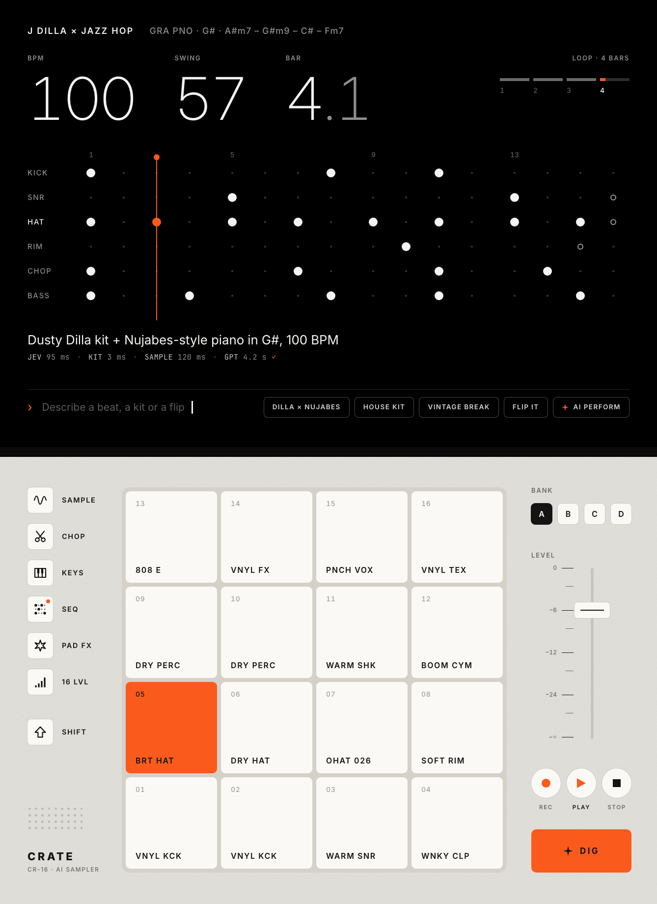
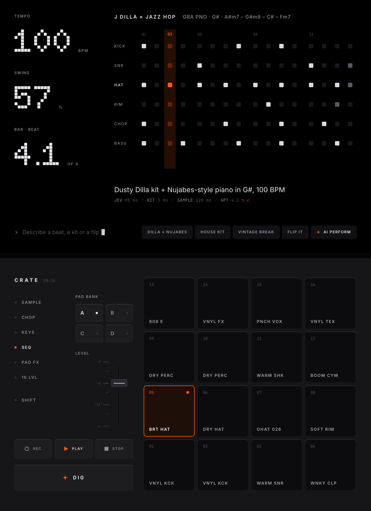
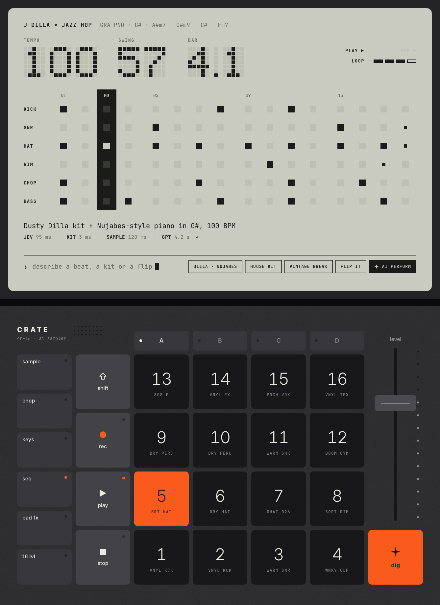
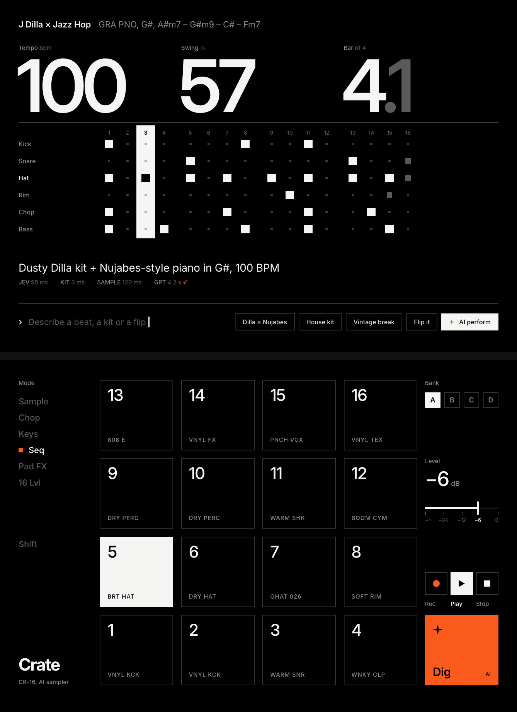
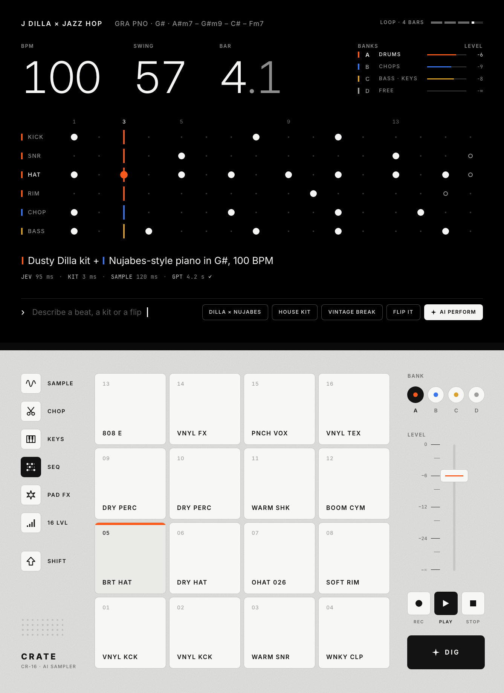
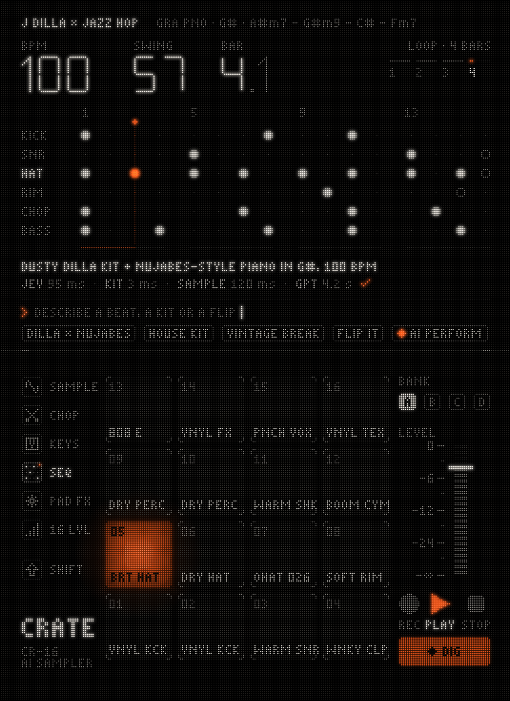
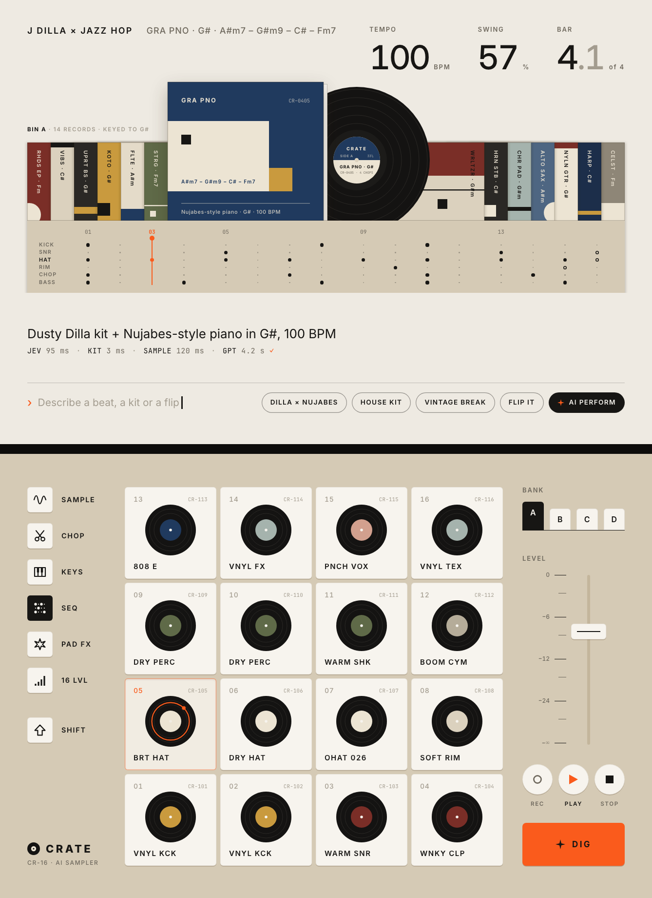

01FIELD
Warm aluminium, white pictogram keys, black ink, one orange.

02ANODIZED
All-black anodized; orange only for what is live.

03K.O. GRAPHITE
Ghost-segment LCD over a graphite calculator keypad.

04SWISS
No chassis: one grid, huge numerals, hairlines.

05COLOUR-CODED
The four bank colours are the only colour, like OP-1 knobs.

06LED FIELD
Every element built from LED dots; warm white + orange.

07RECORD CRATE
Vinyl sleeves on the lid, record-label pads on kraft.

Lid rules, all seven
Answering "too much text noise" and "hard to see".
- One hero row. BPM 100 · Swing 57 · Bar 4.1. The old header is gone.
- One title line. Style + sample; chords keep their case (A#m7, not A#M7).
- The grid. 6 lanes × 16 steps with a playhead you can't miss: a line or an inverted column.
- One result line + one timing strip. Plain language, no truncation, no ellipses.
- Prompt + chips at the foot. No log panel, no repeated header.
Deck state in every direction: SEQ mode, bank A, playing, pad 05 BRT HAT pressed, the ✦ DIG key.